Token Lifecycle and API Hardening
Part 4 documents concrete token and local API controls already shipped in product docs and release lines.
Security Whitepaper Series
Read in order: trust boundary -> control matrix -> verification -> token hardening -> transport and auditability.
Part 4 focuses on one of the highest-leverage control surfaces: token lifecycle and local API hardening. Most practical security incidents in local workflows start here, not in theoretical zero-day scenarios.
Why this chapter follows verification readiness
Part 3 defined verification cadence and incident structure. Part 4 applies that structure to token and API controls where misuse risk is concentrated. Part 5 closes with transport integrity and auditability controls for full rollout confidence.
1. Token lifecycle model
Token lifecycle should be explicit: issue, distribute minimally, rotate, revoke, and verify revocation. Missing one step creates dormant risk that only appears during incident response.

- Issue: scoped token generated for local API protection.
- Distribute: controlled to operators and automation contexts that require it.
- Rotate: scheduled or event-driven rotation with owner accountability.
- Revoke: old tokens invalidated and confirmed with negative tests.
2. API hardening baseline

- Require auth for protected routes.
- Reject malformed or unauthorized requests deterministically.
- Constrain network exposure to expected local or controlled paths.
- Preserve structured error responses for operator triage.
Hardening should be measurable. A policy statement without a test is not a control.
3. Rotation and revocation patterns
Operationally stable pattern:
- Create replacement token.
- Update dependent local integrations.
- Validate new token behavior across required endpoints.
- Revoke old token.
- Run explicit unauthorized checks with revoked token.
This sequence avoids service disruption while still shrinking old-token exposure windows.
4. Misuse scenarios and expected defenses
- Token copied to unmanaged script: detect with failed auth or unexpected usage pattern and rotate.
- Stale token retained in legacy automation: detect via verification drift checks and clean-up runbook.
- Route exposure beyond intended scope: detect through network policy review and local listener checks.
Incident readiness improves when misuse scenarios are rehearsed before production escalation.
5. Case study: rotation without revocation proof
A common process mistake is rotating tokens but skipping explicit revocation tests. Teams believe they reduced risk, but old tokens still work in one forgotten automation path. The fix is straightforward: make revoked-token negative tests mandatory in rotation checklist and tie completion to release or operational gate closure.
6. Integration guidance for enterprise operators
- Store tokens in controlled local secret mechanisms under endpoint policy.
- Separate production and non-production automation channels.
- Keep token inventory with owner mapping and expiry/rotation metadata.
- Require operational sign-off when token scope expands.
This guidance reduces orphaned credentials and improves incident accountability.
Implementation FAQ for token owners
Q: How often should tokens rotate? Use policy-driven cadence tied to risk class and incident history; avoid indefinite tokens.
Q: Is token hardening enough without transport controls? No. Token and transport controls are complementary. Part 5 addresses transport integrity and evidence for auditability.
Q: What is the minimal proof for a completed token rotation? issuance record, integration update confirmation, revoked-token rejection test result, and owner sign-off.
Token program notes: making lifecycle controls sustainable
Token controls usually fail due to process drift, not cryptography. Teams generate strong tokens but lose inventory discipline over time. Keep a token register with owner, scope, creation date, last rotation date, and linked automation dependencies. Without inventory, revocation events become guesswork.
Rotation reliability also depends on change sequencing. If revocation happens before dependent automation is updated, teams may bypass controls under pressure. Use staged rotation with validation checkpoints and defined rollback behavior. Document the sequence in one-page SOP and keep it accessible to on-call operators.
Another common gap is insufficient negative testing. Positive tests confirm new token works; negative tests confirm old token does not. Both are required. Missing negative tests leaves hidden exposure in legacy scripts and forgotten environments.
For governance, report token lifecycle metrics monthly: rotation adherence, stale-token count, orphan-token count, and unauthorized rejection trend. These metrics expose process health earlier than incident counts.
Token hardening check for security committee
- Token inventory exists and is owner-complete.
- Rotation records include both positive and negative validation evidence.
- Revocation process has tested rollback and escalation path.
- Token scope expansion requires explicit approval record.
API hardening notes: practical boundaries for local operations
Local API security is often evaluated as if it were a public internet API. That can lead to over-engineering in low-risk contexts and under-engineering in high-risk contexts. The better approach is risk-tiered hardening: enforce strict auth and route constraints by default, then add transport and exposure controls aligned to deployment environment.
Another practical issue is configuration drift between environments. Production paths may enforce stricter controls than test paths, but teams sometimes promote scripts without validating assumptions. Include environment-specific hardening checks in release gates and require explicit approval when controls differ by environment.
Finally, include hardening regression tests in change review for any endpoint behavior change. Endpoint behavior drift can silently weaken controls even when token policy remains unchanged. Regression tests preserve control intent across feature evolution.
Appendix: token governance for multi-team environments
In multi-team environments, token lifecycle governance requires role clarity. Define three roles: issuer, consumer, and approver. The issuer manages creation and revocation. The consumer operates integrations and reports anomalies. The approver authorizes scope expansion and exception handling. This simple role model reduces ambiguity during urgent changes.
For enterprise controls, keep token usage inventory linked to system purpose. A token without declared purpose should be treated as governance debt and removed or reclassified. Purpose linkage also helps incident response teams assess impact quickly when token compromise is suspected.
A second best practice is pre-approved emergency rotation procedure. During incidents, teams should not design rotation steps from scratch. Maintain a tested emergency path that includes communication template, dependency checks, rollback conditions, and post-event verification tasks.
Third, align token policy with developer workflow realities. If policy is too rigid for valid automation use-cases, teams may create unmanaged workarounds. Governance should protect systems while remaining operationally usable.
Data sources for this chapter
- API Token Guide and API Reference for auth semantics and endpoint expectations.
- Documentation Center for local API and runtime context.
- Release Ledger for token/control related hardening traceability.
Next: transport integrity and auditability
Continue to Part 5 for HTTPS/proxy integrity checks, audit evidence packaging, and security review closeout model.
Security Review Checklist
Download the operator checklist used in enterprise reviews
Use this checklist in architecture review, rollout sign-off, and recurring governance audits.
Validate this control path in your own environment
Save your first $1,000 before the next billing cycle.